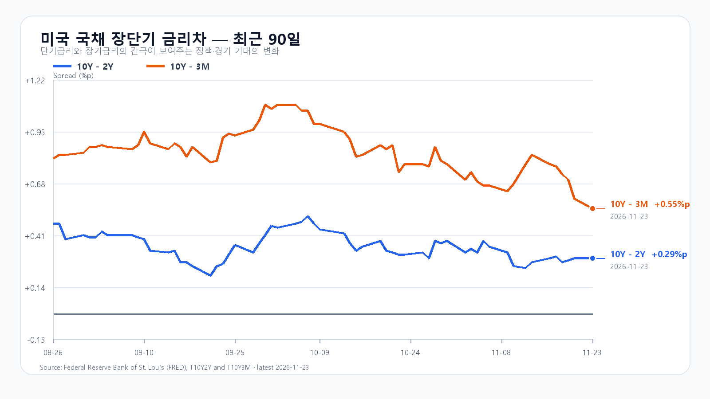

젠슨 황이 엔비디아 최고경영자로 돌아오자 뉴욕에서 반도체주가 급반등했다. 엔비디아는 31.48%, 마이크론은 19.04% 올랐고, 미국 반도체 ETF인 SOXX와 SMH도 각각 13.63%, 15.03% 상승했다. 서울 증시가 3.31% 내린 뒤 나온 소식이다. 오늘 코스피가 반등하면 전날 고점인 4,759.88을 넘어선 뒤에도 매수세가 이어지는지가 중요하다. 엔비디아 발표 · 미국 증시 마감
미국 반도체주가 오르는 동안에도 종목별 온도 차는 컸다
엔비디아는 장중 171.50달러까지 올랐다가 165.05달러에 마쳤다. 마이크론은 시가 690.72달러보다 높은 707.70달러에 거래를 끝냈다. AMD도 올랐지만 476.33달러에 출발해 453.46달러로 마감했다. 한국시간 오전 8시 1분 무렵 미국 시간외 거래에서 엔비디아와 마이크론은 정규장 종가보다 각각 0.63%, 0.76% 높았고 AMD는 0.76% 낮았다. 삼성전자와 SK하이닉스도 개장 뒤 첫 저점을 얼마나 잘 지키는지 따로 볼 필요가 있다. 엔비디아 시세 · 마이크론 시세 · AMD 시세
오라클은 지난 금요일 장 마감 뒤 OpenAI에 컴퓨팅 인프라를 제공하는 데 필요한 자금을 확보했다고 밝혔다. 월요일 오라클 주가는 12.3% 올랐다. 자금조달 부담이 줄면 서버 발주를 이어가기 쉬워진다. 투자가 수익으로 돌아오는 속도는 클라우드 매출과 현금흐름에 달려 있다. 오라클 발표 · 미국 증시 마감
코스피 4,760선에서 외국인과 프로그램 수급을 본다
전날 코스피는 매도 사이드카가 발동된 뒤 장중 4,586.80까지 밀렸고, 저점에서 121.74포인트를 회복해 4,708.54에 마감했다. 유가증권시장에서 상승한 종목은 71개에 그쳤다. 외국인이 순매도를 이어가는 동안 프로그램에서는 비차익 매수가 우세했다. 오늘 삼성전자와 SK하이닉스가 반등하고 금융·자동차 등으로 매수가 번지면 4,870선까지 되돌릴 여지가 생긴다. 반도체주만 오르고 외국인 현물 매도가 이어지면 장 초반 상승폭이 줄어들 수 있다. 삼성증권 마감 시황
| 항목 | 값 | 원천 기준 시각 |
|---|---|---|
| KOSPI 전일 종가 | 4,708.54 | 2026-11-23T15:30:00+09:00 |
| KODEX 전일 종가 | 46,585원 | 2026-11-23T15:30:00+09:00 |
| USD/KRW 하나은행 고시 | 1,342.50원 | 2026-11-24T06:59:46+09:00 |
| NQF 최근 거래 | 26,845.00 | 2026-11-24T06:59:59+09:00 |
| ESF 최근 거래 | 7,270.50 | 2026-11-24T06:59:59+09:00 |
| BZF 최근 거래 | 86.72 | 2026-11-24T06:58:31+09:00 |
| CLF 최근 거래 | 80.25 | 2026-11-24T06:59:59+09:00 |
국내 뉴스심리와 경기선행지수
- 한국은행 뉴스심리지수 91.07 · 2026-11-22 관측 · 주간 공표 · 7일 전보다 8.02포인트 하락 출처
- 뉴스심리지수 3개월 평균 100.76 · 2026-10까지 3개월 · 일별 지수의 월평균 사용 · 한 달 전 3개월 평균보다 1.51포인트 하락 출처
- 경기선행종합지수 순환변동치 104.1 · 2026-09 기준 · 전월보다 0.1포인트 하락 출처
메모리 현물과 AI 서버 주문
트렌드포스의 23일 DDR5 16Gb 현물 평균은 60.70달러로 0.05% 올랐고, DDR4 16Gb는 78.50달러로 0.16% 내렸다. 트렌드포스는 북미 클라우드 업체의 기업용 SSD 수요 전망이 높아졌지만 중국 업체의 주문 감소폭이 더 크다고 봤다. 4분기 낸드 계약가격 상승률 전망은 8~13%로 낮췄다. 한국시간 25일 오전 델 실적에서 AI 서버 주문과 출하 전망을 보면, 이번 주가 반등을 뒷받침할 수요가 얼마나 견조한지 가늠할 수 있다. DRAM 현물 · 낸드 전망 · 델 실적 일정
KODEX 레버리지, 전날 고가 47,785원 주목
KODEX 레버리지는 전날 46,585원에 마쳤다. 47,785원을 회복한 뒤 지지하면 지난 금요일 종가인 49,925원이 다음 저항이다. 46,585원 아래로 돌아가면 전날 저점인 43,985원까지 다시 열릴 수 있다. 코스피 종가의 기본 범위는 4,760~4,910이다. 4,910을 넘고 외국인·프로그램이 함께 순매수하면 5,060까지, 4,760을 밑돌고 두 수급이 모두 순매도면 4,580까지 범위를 넓혀 본다. 코스피·KODEX 투자전략
미국 10년물 국채금리는 4.92%로 전 거래일과 같았다. 25일 오후 10시 30분에는 미국 10월 개인소비지출 물가와 3분기 GDP 잠정치가 함께 나오고, 26일에는 한국은행 금융통화위원회가 열린다. 미 재무부 · 미국 경제분석국 · 한국은행
